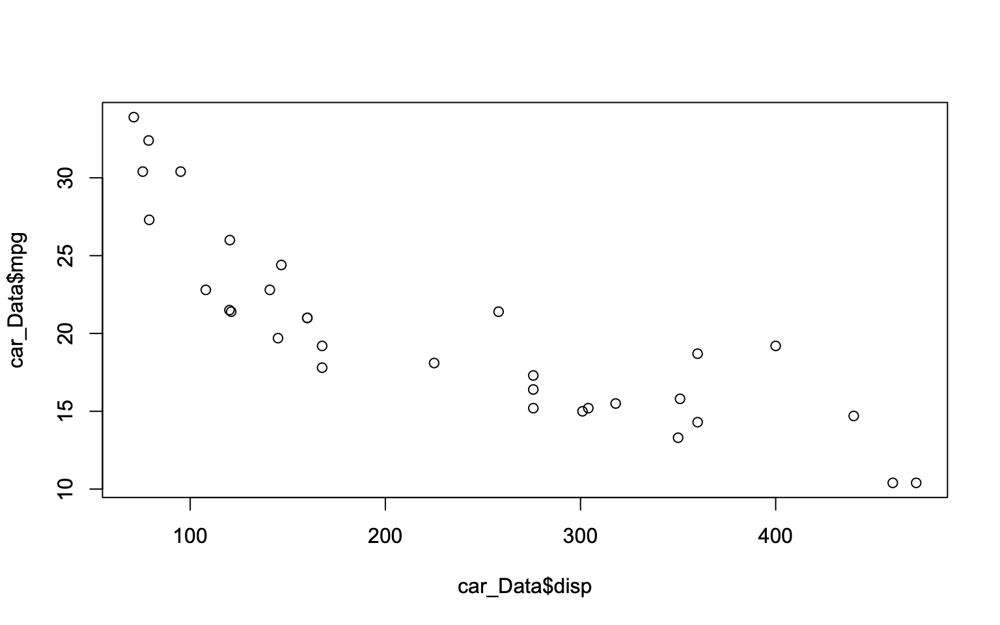
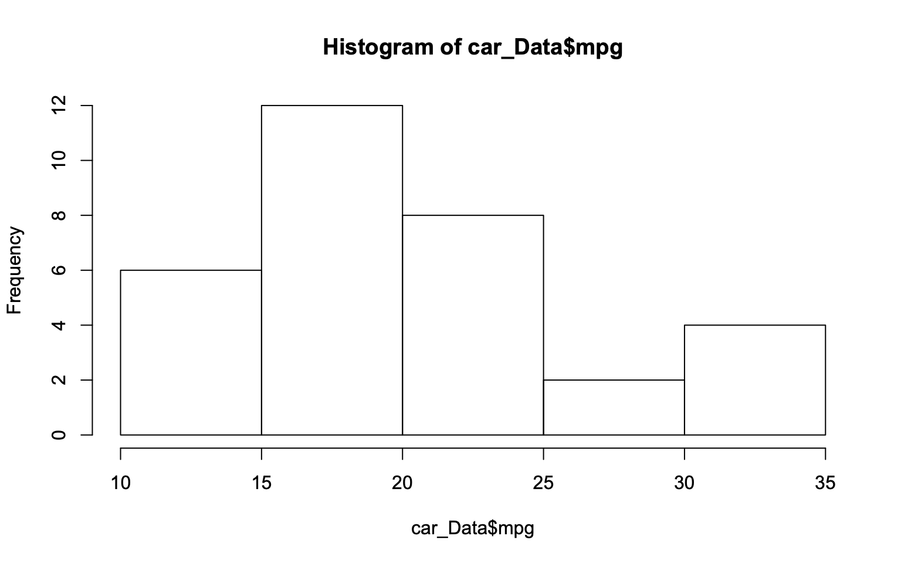
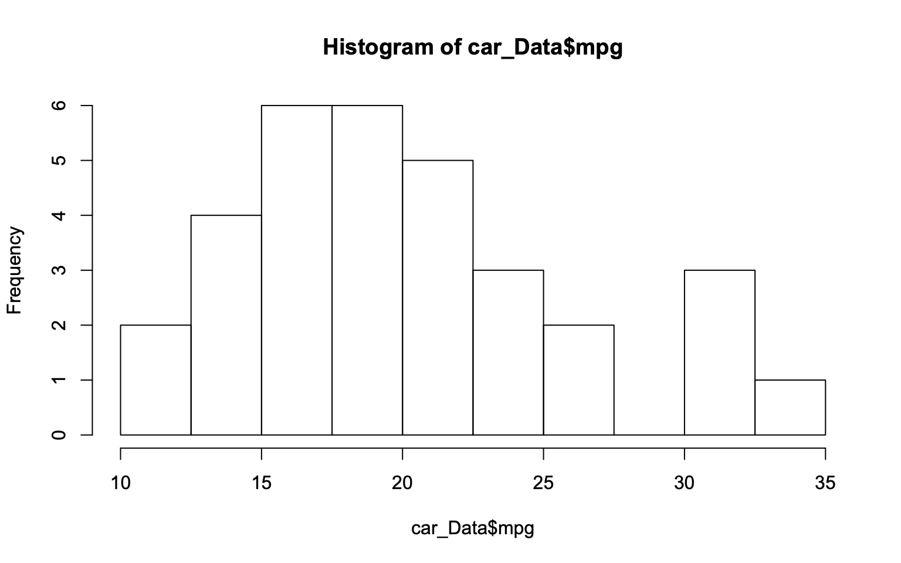

Working with Data in R
Keeping Track of progress in R
So far we have been working exclusively in the R console. This is useful for trialing code and doing quick intial analyses, however, the code we have typed is not saved for when we might look back at it in the future. If we want to keep a permanent record of our code, the we do this using a r-script. An r-script is basically a text-file containing lines of r-code. Usually we create them from scratch within R, though they can be created by importing a text file from text editor.
The easiest way to create an r-file is by clicking the button in the top left corner of RStudion that looks like a piece of paper with a greenplus over it.
Setting Working Directory
When we use R, it is always associated with a specific directory within our computer. The place that R is associated with is known as the working directory. The working directory is the default place where R will look when we try to import (export) objects into (to) R as well as the place that files are saved to. We can find out which directory R is pointed at by using the getwd() function:
getwd()## [1] "/Users/waqr/Desktop/r course website"If you know that you will be reading and writing multiple files from and to the same folder, you can set the working directory to that folder. This can be useful when a project has many different r-files and associated items such as data, plots etc. In this case, one can set the working directory to the folder containing the files to make sure that everything stays in one place. It is also useful for when projects are shared between individuals using different computers, as setting the working directory to the shared folder prevents any isses that could arise from people using different ways to organise their work.
A new working directory can be set by clicking on the tab (Session) then (Set_Working Directory), or by the command setwd:
## filename = "C:/Users/Robert/Documents"
setwd(filename)Importing Data
In almost every project, you will want to import some data to analyse. This data will come in a variety of formats. R studio has a nice feature in Environment>Import_Dataset which enables you to select the file you wish to download (similar to STATA) from your computer. The data is then imported into R and the code that R has used is displayed in the console.
It is possible to import files in the following formats:
|——–|:———-:|
If we want more control over the way that R imports the data we can also use the necessary commands in R directly. Some importnant examples of this are given in the next subsections.
In addition, packages can be installed to import data in almost any format. For example the readr package can read in spreadsheets from text files or tab delimited files.
CSV (Comma-seperated values)
A common format of data that you will likely import is csv data.
We can import the file using the full path with the file name and suffix included such as below:
car_Data <- read.csv(file = "car_Data.csv", header = TRUE)Downloading files from the internet
Sometimes it is more practical to download files directly from the internet. There are lots of different packages out there to do this. The one I use was developed by Hadley Wickham, called readr. Here we are going to download some data from the github page for the course.
## load the readr package, if this is not installed then install it.
library(readr)
#use the function read_csv
#car_data <- read_csv("https://raw.githubusercontent.com/RobertASmith/Intro_to_R/master/car_Data.csv", header = TRUE)
car_Data = mtcarsDownloading files directly to R within the same script as the analysis can be useful since it reduces the risk of you accidently changing the file. Just be careful that the data will always be available.
Summarising Data
Once we have our data read into R, we want to ensure that the data is as we would expect, in the correct format etc.
We can use the function head to look at the first 6 number of lines of the data. We can specify a different number of lines by chancing the function input.
## head data with default 6 rows
head(car_Data)
## head data with 10 rows
head(car_Data, n = 10)We can summarise a dataset using the function summary. This shows us the length, class and Mode. If the class is numeric it will give some indication of the distribution by displaying min, median, mean, max.
## summarise the data,
summary(car_Data)
## summarise single variable
summary(car_Data$mpg)Summarising
Data-frames (Do we need this section?)
Summarise data-frame:
## We can summarise our data-frame with height, weight, first name and BMI.
#summary(df)
## The data-frame height variable is numeric, will return quantiles.
#(df$height)
## The data-frame first-name lists the first name and number (character)
#summary(df$first_name)We can use the output of the summary function to create objects. The summary of the year variable gives the quantiles. These can be stored as an object, here called temp (temporary object). If we just want any one number from the vector of quantiles we can define this in brackets. The script below creates two new objects, median and range.
temp <- summary(car_Data$mpg)
Median <- temp['Median']
Range <- temp['Max.'] - temp['Min.']Plotting Data
Line Plot
R also has wide ranging plotting capabilites. For basic plotting we can use the plot function. In this next example, we will prodcue a simple plot of miles per gallon vs engine displacement in our data set to see what the relationship between the variables.
#plot of mpg vs disp
car_Data = mtcars
plot(x = car_Data$disp, y = car_Data$mpg)
#notice we can remove arguments and still get same result
plot(car_Data$disp, car_Data$mpg)
Whilst this plot is useful, it is quite basic. We make the plot more informative by specifying extra features that we want when we call the plot function. We can add labels, titles, lines of best fit and more.
plot(x = car_Data$disp, y = car_Data$mpg,
type = "b",
xlab = "Displacement",
ylab = "Miles per Gallon",
main = "MPG vs Engine Displacement")
Sometimes we may just want to see how the distribution of the data is for a single variable. For numerical variables this is done easily by using plotting a histogram. To plot a histogram in R we use the command hist.
hist1 <- hist(car_Data$mpg)
#We can alter the 'bins' by specifying the additional argument 'breaks = ' in the hist function
hist(car_Data$mpg, breaks = c(10,12.5,15,17.5,20,22.5,25,27.5,30,32.5,35))
#a neater way of doing the same as above is to use seq
hist(car_Data$mpg, breaks = seq(10,35, by = 2.5))
#we can again edit the title etc by adding extra arguments
hist(car_Data$mpg,
breaks = seq(10,35, by = 2.5),
xlab = "Miles per gallon",
main = "Histogram of Miles per Gallon")